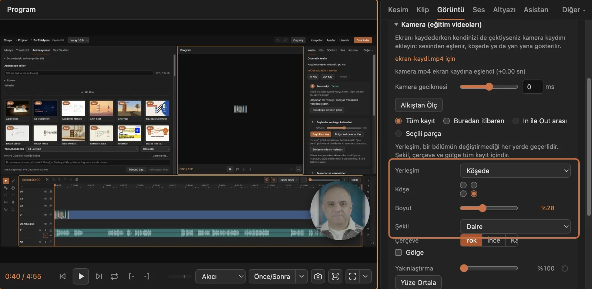
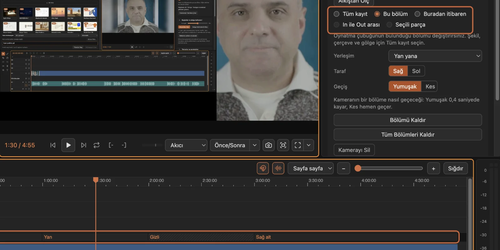
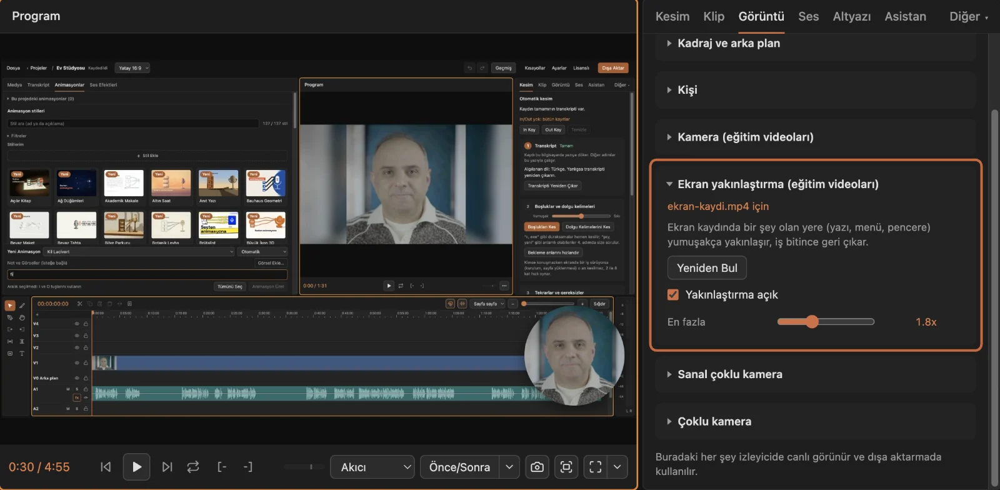

Ekran eğitimleri
Ekranda kaydedilen dersler için: kameran ekran kaydıyla sesinden eşleşir, istediğin yere oturur, görüntü bir şey olan yere yakınlaşır.

Kameranı ekle
Ekran kaydını projenin kaydı olarak aç. Görüntü › Kamera (eğitim videoları)'da Kamera Kaydı Ekle…'ye bas. Sesinden eşlenir. Kilnframe'in kendi kaydediciyle kaydettiysen kamera zaten eşlenmiş gelir (Ekranı ve kamerayı kaydet).
Görüntü sesin gerisinde kalıyorsa Kamera gecikmesi'ni milisaniye olarak ayarla ya da kameranın önünde bir kez el çırp ve Alkıştan Ölç'e bas.
Kamera nerede durur
- Yerleşim: Köşede, Yan yana, Tam ekran yüz ya da Gizli.
- Köşe (üst ya da alt, sol ya da sağ), Taraf, Boyut, Şekil, Çerçeve ve Gölge.
- Yüze Ortala kayıt boyunca yüzünü bulur ve kareyi onunla doldurur; Yakınlaştırma elle ayarlar. Görüntüyü kaydırmak için izleyicide kameranın içinde Alt'ı basılı tutup sürükle.
Bölüm bölüm
Değiştirilecek yer, bir değişikliğin nerede geçerli olacağını söyler: Tüm kayıt, Bu bölüm (bölümler oluşunca), Buradan itibaren, In ile Out arası ya da Seçili parça. Böylece kamera girişte köşede, uzun bir gösterimde gizli, sonda yan yana olabilir. Geçiş: Yumuşak 0,4 saniyede geçer, Kes hemen geçer.
Transkriptte bir cümleye sağ tıklayıp kamerayı orada da değiştirebilirsin.

Ekran yakınlaştırma
Ekran yakınlaştırma (eğitim videoları), ekran kaydında bir şey olan yere (yazı yazma, bir menü, bir pencere) yavaşça yaklaşır, iş bitince geri uzaklaşır. Hareketleri Bul ve Yakınlaştır'a bas; En fazla ne kadar yaklaşacağını ayarlar.

Bekleme anlarını hızlandır
Kesim sekmesinde Bekleme anlarını hızlandır: kimse konuşmazken ekranda bir iş sürüyorsa (kurulum, sayfa yüklenmesi) o an kesilmez, 2 ile 8 kat hızlı oynar.
Fare vurgusu ve tıklamalar
Kilnframe'in kaydediciyle yapılmış, imlecin nerede olduğunu tutan bir kayıt için:
- Fare imlecinin altında daire göster; rengi, opaklığı ve boyutuyla.
- Tıklamada halka göster; kaydederken Tıklamaları da kaydet işaretliyse.
- Tıklama Sesi Ekle: kaydedilen her tıklamada kısa bir tık, kendi izinde.